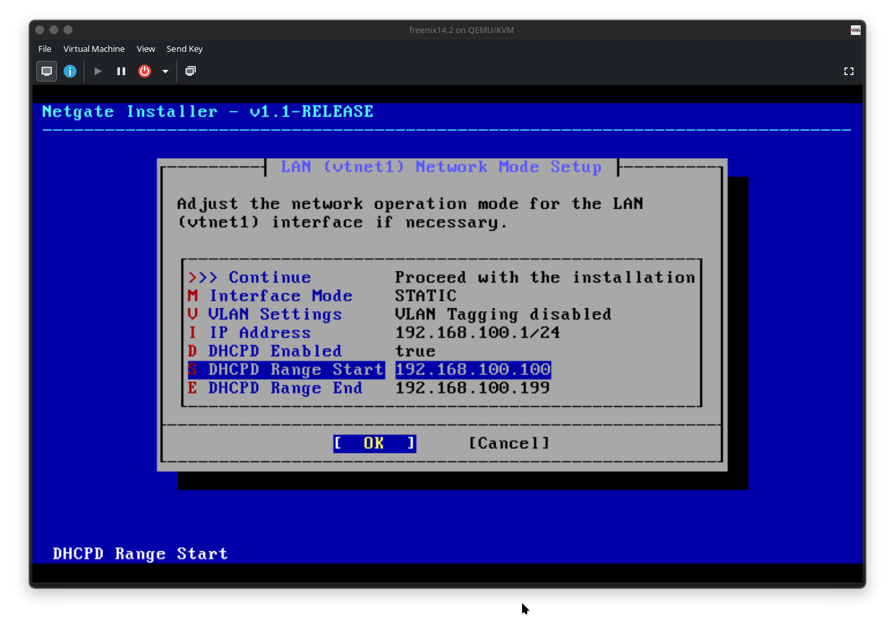
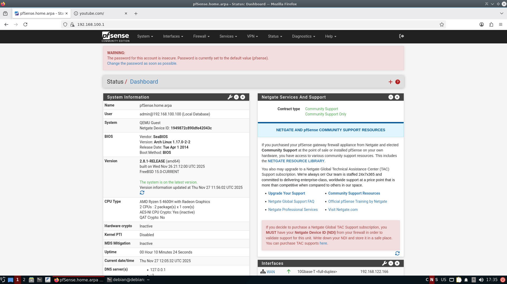
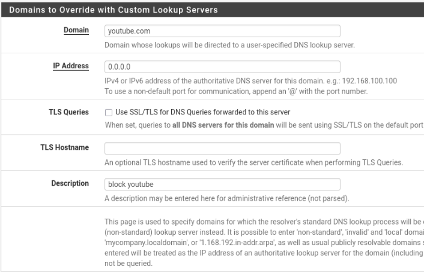
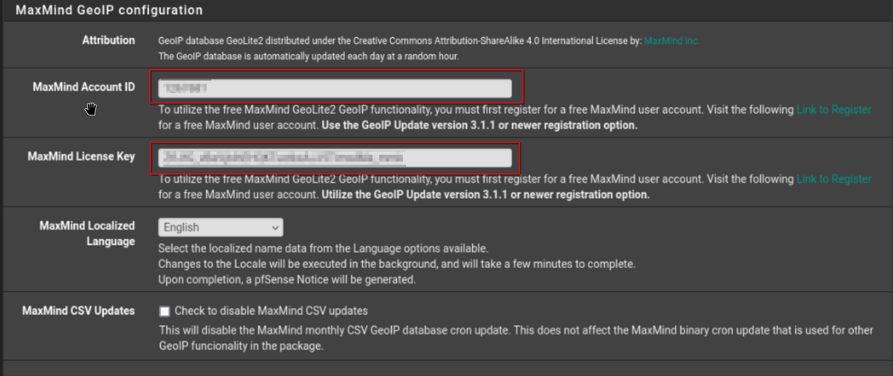
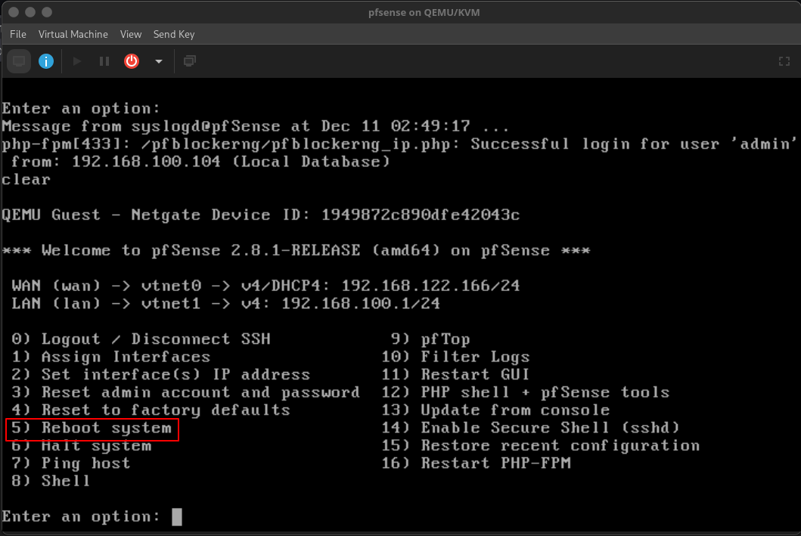
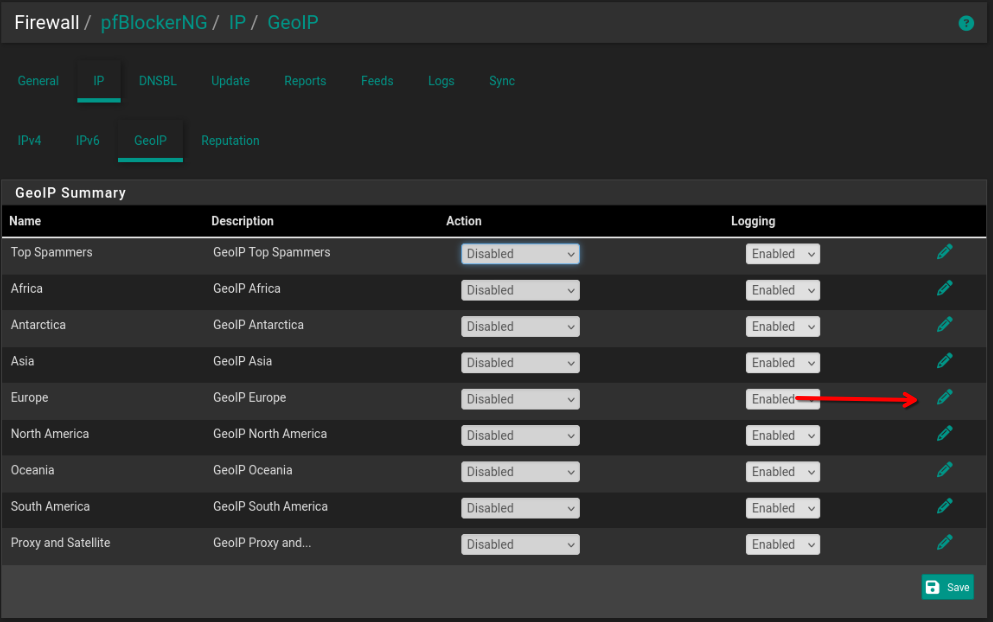
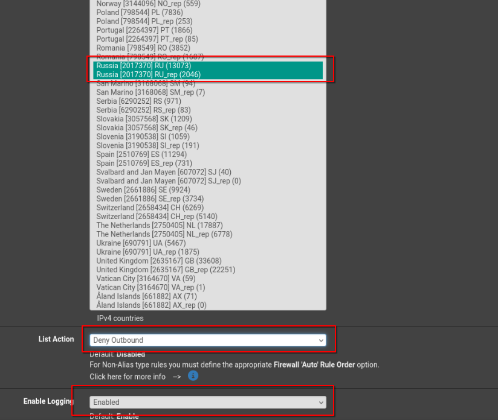
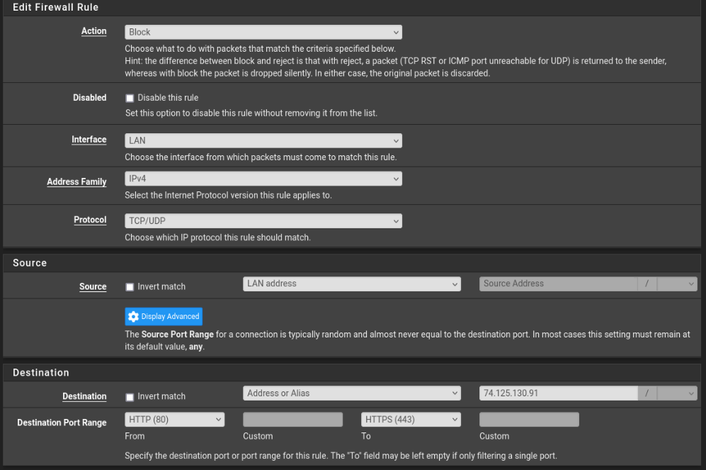

Before creating the pfSense VM, set up a custom internal network bridge for LAN traffic and link it to your main virbr0.
-
Create the network definition file:
bash
sudo nano /etc/libvirt/qemu/networks/pfsense.xml -
Use a definition similar to:
bash
sudo virsh net-define /dev/stdin <<EOF <network> <name>pfsense-lan</name> <forward mode='none'/> <bridge name='pfsense-lan' stp='on' delay='0'/> </network> EOF -
Enable and autostart the network:
bash
sudo virsh net-start pfsense-lan sudo virsh net-autostart pfsense-lan
2. Create and install the pfSense VM
Create the VM with two network interfaces: one for WAN (to the internet) and one for LAN (internal VMs).
-
In virt-manager, create a new VM and choose “Generic Linux 2024” as the OS type, then tick “Customize before installation”.
-
Add two NICs:
-
WAN: attach to your external network (e.g.
default/virbr0). -
LAN: attach to the
pfsense-lannetwork created earlier via “Add Hardware → Network”.
-
-
Start the installation and accept the default pfSense installation settings

3. Basic pfSense configuration
After installation, perform initial setup and make sure management access and DNS work.
-
From the pfSense console menu, select option
14to enable SSH if you want remote shell access. -
Access the Web UI using the LAN gateway IP shown on the console (for example
https://192.168.100.1). -
In the setup wizard, configure DNS:
-
Primary DNS:
1.1.1.1 -
Secondary DNS:
9.9.9.9
Then click through the wizard and change the admin password if desired.
-
-
To see connected devices, go to:
Status → DHCP Leasesand verify that your LAN VMs appear with hostname and IP. -
If LAN VMs do not have internet access, add a LAN rule allowing HTTP/HTTPS outbound:
-
Go to
Firewall → Rules → LANand create a rule:-
Action: Pass
-
Interface: LAN
-
Address Family: IPv4
-
Protocol: TCP/UDP
-
Source: LAN net or LAN address
-
Destination: Any
-
Destination ports: HTTP (80) and HTTPS (443) (using the port range fields).
-
-

4. Blocking domains and countries (pfBlockerNG + DNS)
You can block specific domains via DNS overrides and block countries or IP ranges using pfBlockerNG with GeoIP.
-
Block a single domain via DNS Resolver (example: youtube.com):
-
Go to
Services → DNS Resolver. -
Scroll down to “Domain Overrides” and add:
-
Domain:
youtube.com -
IP Address:
0.0.0.0 -
Description: e.g. “block youtube”.
-
-
Save and apply settings. This causes lookups for that domain to resolve to
0.0.0.0. 
-
-
Install pfBlockerNG-devel:
-
Go to
System → Package Manager → Available Packagesand installpfBlockerNG-devel. -
After installation, go to
Firewall → pfBlockerNG-devel.
-
-
Configure GeoIP (MaxMind):
-
Navigate to
Firewall → pfBlockerNG-devel → IP, then scroll to the MaxMind configuration section. -
Obtain a free MaxMind account ID and license key from the MaxMind website and enter them in the pfBlockerNG GeoIP settings.

-
Save changes and reboot the pfSense VM so the GeoIP databases download.

-
-
Block traffic from/to specific countries (example: Russia):
-
Open
Firewall → pfBlockerNG-devel → IP → GeoIP. now open www.yandex.ru in new tab, which is russian website we'll try to block russian websites
-
In the country list (IPv4), hold
Ctrland select the countries you want to block, e.g. “Russia [RU]” and “Russia [RU_rep]”. -
Set “List Action” to Deny Outbound so outbound connections to those countries are blocked.
-
Enable logging if desired and click Save.


-
Go to
Firewall → pfBlockerNG-devel → Updateand click Run to apply and build the rules. -
After this, connections to sites hosted in those countries (e.g.
www.yandex.ru) should fail.
-
5. Blocking YouTube with a firewall rule
In addition to DNS-based blocking, you can block specific IPs or networks with a firewall rule on the LAN interface.
-
Go to
Firewall → Rules → LANand click Add (typically at the bottom). -
Create a rule similar to:
-
Action: Block
-
Interface: LAN
-
Address Family: IPv4
-
Protocol: TCP/UDP
-
Source: LAN net or LAN address
-
Destination: Single host or alias (for example, a specific YouTube IP like
74.125.130.91, or better an alias containing YouTube IP ranges). -
Destination port range: From HTTP (80) to HTTPS (443).
-
-
Save and apply changes; traffic from LAN to that IP on ports 80/443 will now be blocked.

next i'll be looking into vlans static ips.